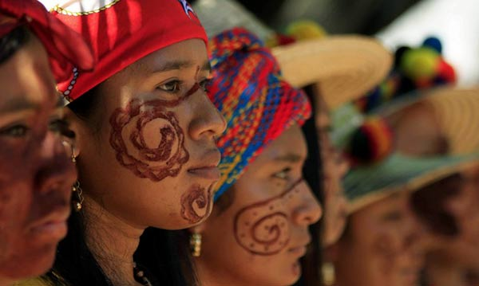

Warao

La antigüedad de los Warao en el Delta del Orinoco es difícil de establecer, pero los últimos estudios, basados en piezas de cerámica, afirman que sus orígenes se remontan a 17.000 años antes de Cristo. Con estos datos, todo parece indicar que esta tribu es las más antigua del Delta y de Venezuela. El término Warao traducido al castellano significa Gente de las canoas.
Actualmente los Warao es la segunda etnia más numerosa de Venezuela por detrás de los Wayú con una población estimada de 40.000 individuos. Aunque en los años 60 se produjeron varios hechos que podrían haber llevado a la extinción con esta tribu, como la salinización de las aguas y la acidificación de los suelos, lo que provocó una reducción de la pesca, han sabido adaptarse a las nuevas condiciones medioambientales, aunque estos acontecimientos provocaron un éxodo masivo a las grandes ciudades.
Los warao son de constitución más bien mediana, robustos y imberbes. Al vivir en continuo contacto con el agua, el tema de la vestimenta no es importante para ellos y tan solo suele utilizan un pequeño trozo de tela que pasan entre sus piernas y dejan caer por delante a modo de delantal. En cambio las mujeres se arreglan con plumas, fibras de curagua y pulseras tanto en las muñecas con en las piernas.